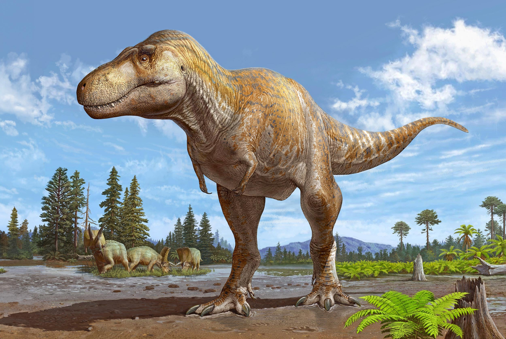
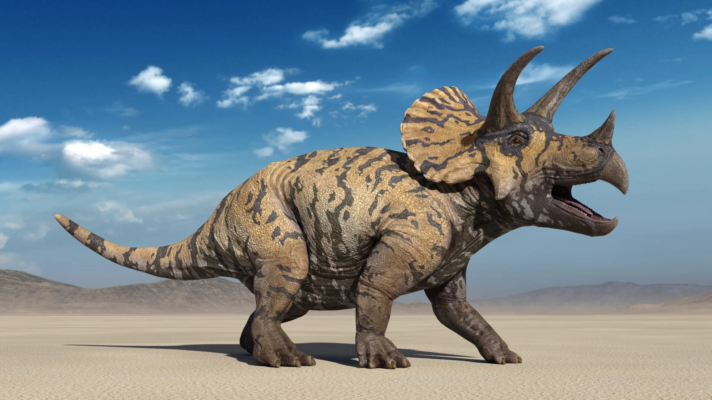
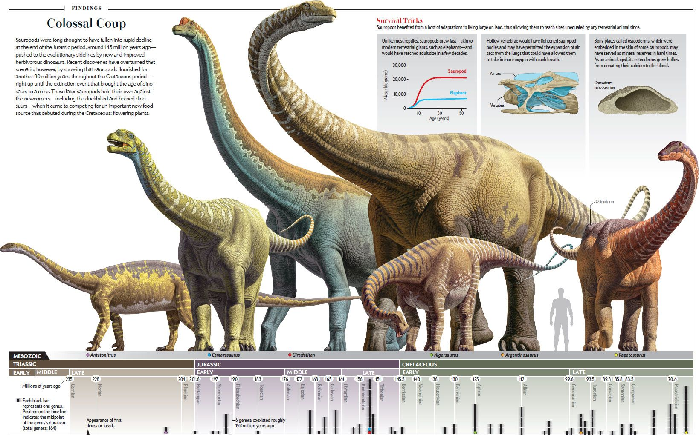

Dinosaurs are some of the most interesting animals to ever live on Earth. As a whole they lived for more than 160 million years and evolved into many different shapes and sizes. Some dinosaurs were small enough to fit in a person's hands, while others were among the largest land animals to ever exist.
Dinosaurs are also interesting because they continue to influence modern entertainment. Movies, television shows, video games, books, museums, and toys have introduced dinosaurs to generations of people.

Dinosaurs first appeared during the Triassic Period, around 230 million years ago. They lived through the Triassic, Jurassic, and Cretaceous periods before most non-avian dinosaurs became extinct about 66 million years ago. Birds are considered living dinosaurs, meaning that technically, dinosaurs did not completely disappear from Earth.
Dinosaurs lived in many different environments. Fossils have been discovered on every continent, including Antarctica. Different species adapted to forests, deserts, coastal environments, and other prehistoric ecosystems. Their fossils can include bones, teeth, footprints, eggs, nests, and even preserved prints of skin or feathers.
There were thousands of different dinosaur species, and they varied greatly in appearance and behavior. Scientists classify dinosaurs into different groups based on their anatomy and evolutionary relationships. Some groups became known for their size, armor, horns, long necks, or sharp teeth.
Tyrannosaurs were a group of theropod dinosaurs that included Tyrannosaurus rex. They were generally carnivorous dinosaurs with large skulls and powerful jaws. Tyrannosaurus rex lived during the Late Cretaceous Period and is one of the most famous dinosaurs in the world.

Triceratops was a large herbivorous dinosaur that lived during the Late Cretaceous Period. It had three horns and a large frill extending from the back of its skull.

Sauropods were generally large, long-necked dinosaurs with long tails and relatively small heads. Groups of sauropods included animals such as Brachiosaurus, Diplodocus, and Apatosaurus. Some sauropods reached enormous sizes and were among the largest animals to ever live on land.

Most non-avian dinosaurs became extinct approximately 66 million years ago at the end of the Cretaceous Period. The leading scientific explanation is that a large asteroid struck what is now the Yucatán Peninsula in Mexico. The impact caused major environmental changes that affected ecosystems around the world.
The asteroid impact was not the only major event occurring around this time. Large volcanic eruptions were also taking place in what is now India. The combination of environmental changes, including changes in climate and food availability, contributed to a major extinction event. Many other groups of organisms became extinct during the same event, while some species survived.
Dinosaurs have been a big part of pop culture for decades. Movies and television shows often use dinosaurs to create stories about prehistoric worlds, scientific discoveries, monsters, or animals interacting with humans. Some portrayals are based on scientific ideas, while others take creative liberties for entertainment.
One of the most famous examples of dinosaurs in media is the Jurassic Park franchise. The original Jurassic Park movie introduced audiences to a theme park where dinosaurs were recreated using genetic technology.
However, Jurassic Park does not always portray dinosaurs exactly as scientists understand them today. For example, scientific discoveries made after the original movie have changed what researchers know about dinosaur appearance and behavior.
Dinosaurs have appeared in many other forms of entertainment. They have been shown in animated movies, children's television programs, documentaries, and video games.